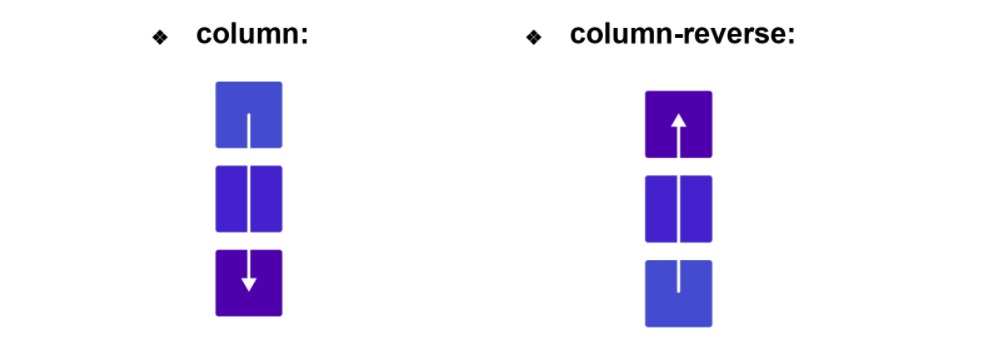
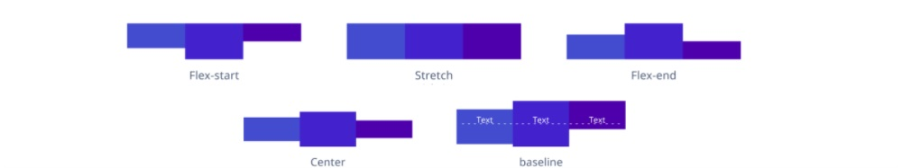
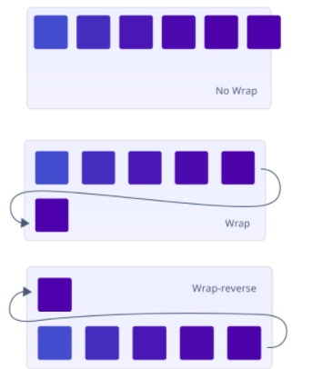

FLEXBOX: CLASE 8
Flexbox
Cuando trabajamos con flexbox primero hay que definir un contenedor flexible con la propiedad display y el valor flex, luego necesitamos pensar en términos de dos ejes: el principal y el eje cruzado. El principal está definido por la propiedad flex-direction y el eje cruzado es perpendicular a este.
- flex-direction: Define en qué dirección el contenedor va a apilar los flex-items, posee cuatro valores:
- row
- row-reverse
- column
- column-reverse 
- justify-content: se utiliza para alinear ítems en el eje principal:
- flex-start: Es el valor por defecto, alinea los elementos al principio del contenedor.
- center: alinea los elementos en el centro del contenedor.
- flex-end: alinea los elementos al final del contenedor.
- space-between: muestra a los elementos con espacio entre las líneas.
- space-around: muestra a los elementos con espacio antes, entre y después de las líneas.
- align-items: se utiliza para alinear los ítems respecto al eje secundario.
- flex-start: alinea los elementos en la parte superior del contenedor.
- center: alinea los elementos en el centro del contenedor.
- flex-end: alinea los elementos en la parte inferior del contenedor.
- stretch: estira los elementos en la parte inferior del contenedor.
- baseline: alinea los elementos como sus líneas de base se alinean. 
- flex-wrap: especifica si los ítems son obligados a permanecer en la misma línea o si pueden fluir en varias.
- nowrap: los ítems van a ser distribuidos en una sola línea.
- wrap: los ítems van a ser colocados en varias líneas, y si llegan a sobrepasar el ancho de su contenedor se va a generar un quiebre para que los ítems se puedan seguir apilando en varias lineas.
- wrap-reverse: los ítems van a ser colocados en varias líneas pero en orden inverso. 
- flex-flow: establece las propiedades flex-direction y flex-wrap juntas. flex-flow: < flex-direction > < flex-wrap >;
- align-content: ajusta las líneas dentro de un contenedor flex.
- flex-start: las líneas son ajustadas a partir del final del eje transversal. El borde transversal de inicio de la primera línea y el del contenedor flex quedan unidos.
- flex-end: las líneas son ajustadas a partir del final del eje transversal. El borde transversal final de la última linea y el del contenedor flex quedan unidos.
- center: las líneas son ajustadas hacia el centro del contenedor flex. Las líneas son unidas entre sí y centradas dentro del contenedor.
- space-between: las líneas son distribuidas de manera uniforme en el contenedor flex. El espaciado entre cualquier par de elementos adyacentes es el mismo. Los bordes transversales de inicio y de fin del contenedor son unidos a los bordes de la primera y la última línea.
- space-around: las líneas son distribuidas uniformemente de modo que el espacio entre cualquier par de elementos adyacentes sea el mismo. El espacio vacío antes de la primera línea y el espacio después de la última es igual a la mitad del espacio entre los elementos.
- strech: las líneas son estiradas para usar el espacio sobrante.